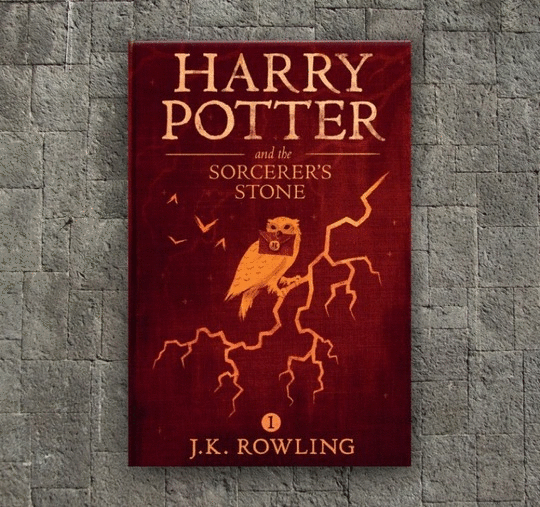

The Daily Prophet
More than 500 million copies of the Harry Potter books sold
Godric Gryffindors Wand Resurfaces At Hogwarts
Earlier today Kaitlyn Byers, a 4th year from Ravenclaw, discovered what is now thought to be Godric
Gryffindors Wand. While the magical item is currently being housed by The Ministry of Magic and
undergoing tests to confirm its origin, how the wand made it into the hands of a student is quite
astonishing .
Lord Voldemorts REAL childhood reveled!

5Rita Sketer relves a part of her new book ever wicth and wizard are talking about!
A young boy lay awake in his bed with his deep hazel eyes piercing the dark, watching the clock that
read 11:58 PM very intently. With his fingers interlocked and crossed over...
How To Make Chocolate Frogs
Everybody loves chocolate frogs. It's impossible to not love them, so The Daily Prophet offers its
reader with its recipe. So hold you frorgs tight as you read this